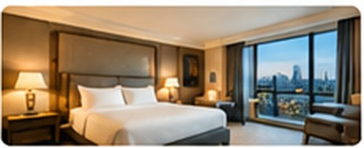
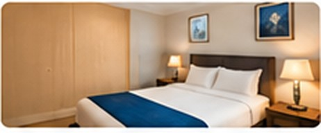
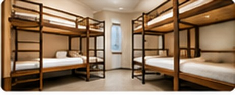

Where to Stay in London
London has different types of accommodation. You can choose where to stay based on your budget.
Luxury Hotels

Luxury hotels often have comfortable rooms and extra facilities. They usually cost more.
Budget Hotels

Budget hotels offer simpler rooms and may cost less. They can be useful for short holidays.
Hostels

Hostels can be cheaper than hotels. Some have shared rooms and kitchens.
Choosing Accommodation
Check the price, location and reviews before booking. Staying near public transport can be helpful.